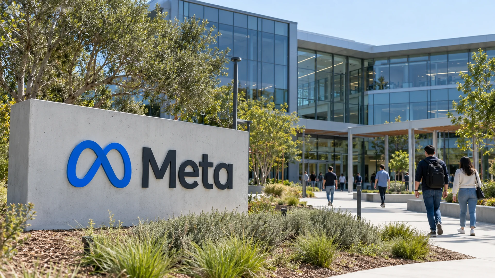

Financial news, market analysis and technology
Top Story
Market Analysis View all →

Market Analysis
DEWA International and Shanghai Electric Target Global Energy Projects in New Partnership
Dubai's utility investment arm and Chinese engineering group agreed to explore energy, water and infrastructure opportunities overseas, but the memorandum contains no announced project awards or financial commitments.

Market Analysis
South Korea Exports Jump 93.7% on AI Chip Demand
South Korean exports rose 93.7% in October as AI chip orders surged, but the calendar effect means the headline needs context.
Market Analysis
Exxon and Chevron Beat Earnings Forecasts as Refining Profits Surge Despite Lower Brent Prices
The oil giants benefited from powerful refining margins even as weaker crude prices complicated the outlook for producers.

Market Analysis
Meta's AI Spending Puts Its AA- Credit Outlook Under Pressure
Meta is generating strong advertising revenue, but the scale of its artificial intelligence investment has put free cash flow and leverage under closer scrutiny.
Tech & AI View all →

Tech & AI
Anthropic Files SEC S-1 for Planned IPO
Anthropic filed its S-1 on October 26, revealing its intended Nasdaq listing while leaving IPO pricing and timing open.

Tech & AI
NVIDIA Expands RTX Spark Laptops With Local AI Agent Tools
NVIDIA is adding new models and agent workflows to its RTX Spark PCs, putting more AI work on laptops as its November earnings call approaches.

Tech & AI
OpenAI, Google, Microsoft and Anthropic Back Shared AI Training Controls for Publishers
Four AI companies have backed a shared publisher preference mechanism, but the controls remain voluntary and implementation is not yet uniform.

Tech & AI
Google Runs AI in Orbit for the First Time, Testing the Future of Space-Based Data Centers
Google’s Project Suncatcher prototype successfully ran an AI model on a TPU in orbit, advancing an ambitious but unproven vision for space-based computing.
Crypto View all →

Crypto
Binance Reopens Bitcoin Withdrawals After $6.3B Hack
Binance gradually restores Bitcoin withdrawals following a $6.3 billion security breach. The exchange says it has covered 95% of affected assets.
Crypto
Bitcoin ETF Outflows Reported at $643 Million as Data Updates
Updated data cited by financial publications show significant Oct. 30 bitcoin ETF redemptions, though early fund-level reports were incomplete.

Crypto
Hong Kong Dollar Stablecoin Targets Solana and Visa–Mastercard Settlement
Standard Chartered-backed Anchorpoint announced plans for HKDAP on Solana and talks on card settlement. The token remains in restricted beta access.

Crypto
Trezor Warns CryptoBilis Buyers After Suspected Wallet Hardware Tampering
Trezor is warning buyers from former reseller CryptoBilis after one suspected Safe 5 implant report. It has not examined the unit or confirmed losses.
News Feed